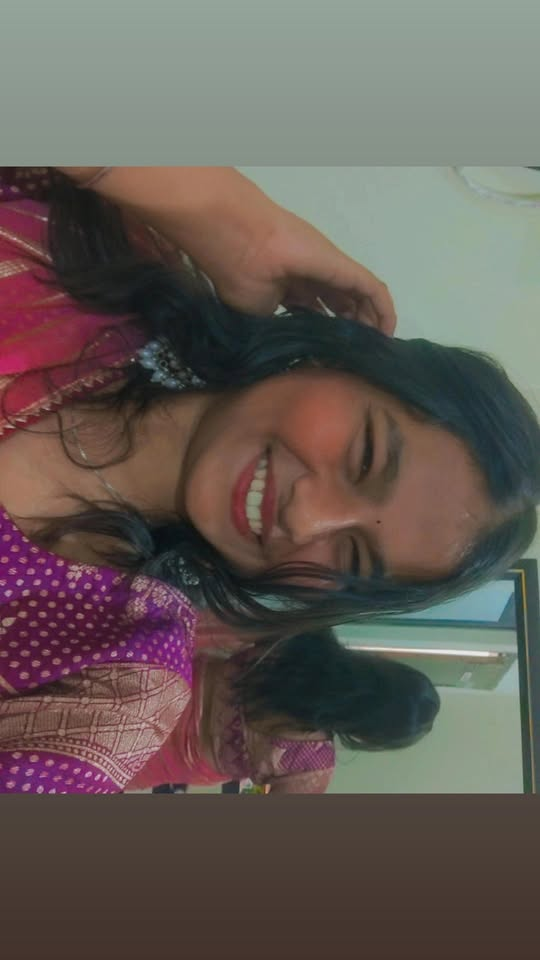

— a letter for —

My sister, my sweetest surprise 💖
Sometimes the universe has the most beautifully strange ways of bringing people together — and finding you, Kritika, on the other side of a tiny little Instagram follow, feels like one of those rare, warm miracles I never knew I was waiting for. You appeared in my notifications one ordinary day, and without any grand announcement, without any dramatic build-up, you just quietly changed something. There is something so special about discovering your own sister not through a childhood memory or a family gathering, but through a scroll and a tap, through reels and stories, through the small, honest pieces of yourself that you put out into the world — and somehow recognizing in those pieces something deeply familiar, something that felt like home. You have the kind of smile that doesn't just light up a photo — it reaches through the screen and makes the person looking at it feel genuinely, inexplicably warmer. I see it in every photo you share, that radiant, unguarded happiness that is entirely your own, and it is one of the most beautiful things I have ever had the privilege of coming across. You carry yourself with this effortless grace — not the kind that is performed or rehearsed, but the real kind, the kind that comes from simply being fully, comfortably yourself — and that is rarer than you know, and far more precious. Getting to know you, even across the little distance of a DM or a comment or a shared laugh over something silly, has been one of my favourite things about this year. You make being siblings feel like a gift given twice — once by birth and once, somehow, by the internet. And I know that sounds funny, but I mean it with every honest part of me. You are thoughtful, you are bright, you are full of a warmth that makes everyone around you feel seen and valued, and the world is genuinely, measurably better for having you in it. I am so proud to call you my sister, Kritika — not just the sister I grew up with, but the sister I am lucky enough to keep discovering, keep knowing a little more with every message, every laugh, every moment we share. Here is to a million more of those moments. Here is to us — found, and never lost again.